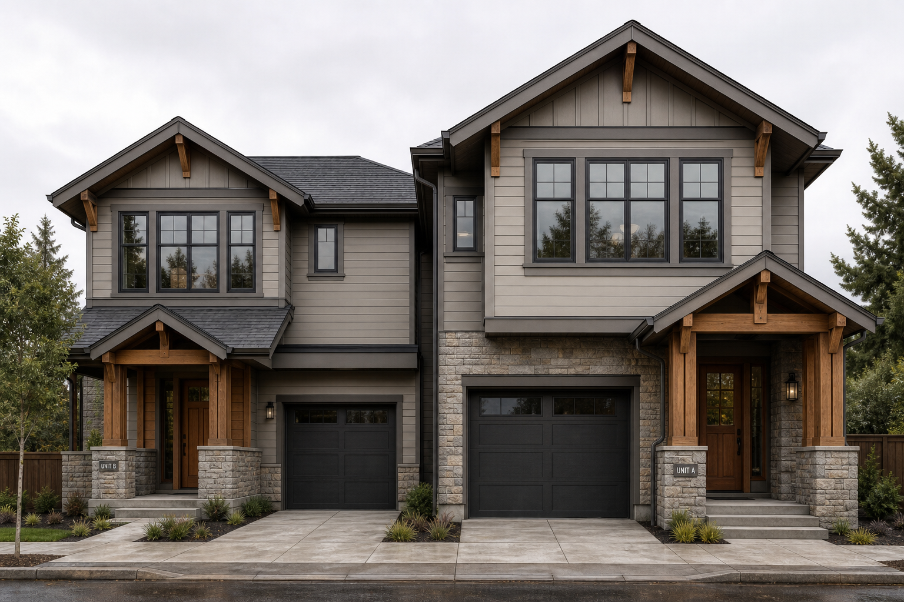
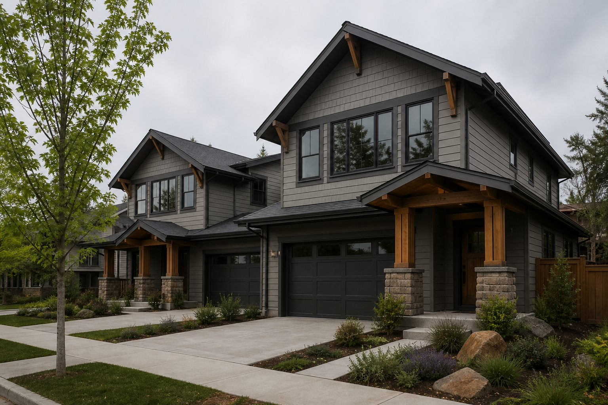

Pass 2C.1 = visualization drift
These images are not a NO vote on J1-B. They are an invalid proof path: coordinates → AI-imagined duplex without geometry/massing truth intermediates.
INVALID as J1-B architectural proof. Do not use for ownership gate. Do not treat as faithful to frozen Access A + J1-B footprints.
J1-B concept status: later STOPPED at Image 4.2 ownership NO (after layer-match PASS). Floor-plan sanity CANCELLED. This page remains INVALID as geometry proof.
New visual chain: survey → geometry truth → massing truth → architectural massing → finished render. Style language from these images is archived for later use only.
Open Image 1 · Geometry truth →
Archived style-reference only
Moved to reference/failed-visualization-drift/. Useful for palette, timber porches, stone bases, roof character — after Images 1–3 agree.

